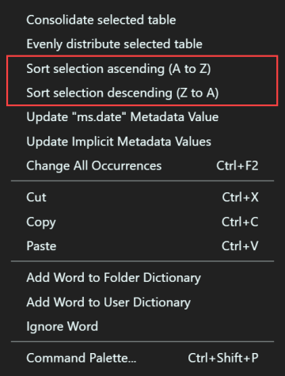

Sort selection
Extension name
The Docs Authoring Pack, Visual Studio Code meta extension is comprised of multiple sub extensions. This feature is included in the Docs Markdown extension. The Docs Markdown extension is part of the Docs Authoring Pack, there is no need to install it separately.
Summary
In a Markdown (*.md) file, when you've made a selection - two sorting context menu items are now available. Right-click on the selected text to open the context menu. You will see something similar to the following menu items:

Tip
The sorting context menu items are hidden until there is a valid selection in the Visual Studio Code text editor.
Sort selection ascending (A to Z)
Selecting the Sort selection ascending (A to Z) option will sort the entire selection ascending, alphabetically from A to Z.
Sort selection descending (Z to A)
Selecting the Sort selection descending (Z to A) option will sort the entire selection ascending, alphabetically from Z to A.
Considerations
The underlying sorting mechanism uses natural language sorting. This makes it more powerful and comprehensive than standard sorting. Consider the following table:
| Column1 | Column2 |
|---------|----------------------------------------|
| 1 | Number 1 |
| Aa | The first letter in the alphabet |
| Ab | The first letter in the alphabet |
| C | The a letter after A in the alphabet |
| M | Somewhere in the middle? |
| 2 | Number 2 |
| X | The alphabet letter is towards the end |
| Z | The last letter in the alphabet |
| 11 | Number 11 |
Without natural language sorting, the order for Column1 would have been 1, 11, 2, etc. but instead it understands that 11 is greater than 2 - resulting in the following ascending order:
| Column1 | Column2 |
|---------|----------------------------------------|
| 1 | Number 1 |
| 2 | Number 2 |
| 11 | Number 11 |
| Aa | The first letter in the alphabet |
| Ab | The first letter in the alphabet |
| C | The a letter after A in the alphabet |
| M | Somewhere in the middle? |
| X | The alphabet letter is towards the end |
| Z | The last letter in the alphabet |
In action
Below is a brief demonstration of this feature.